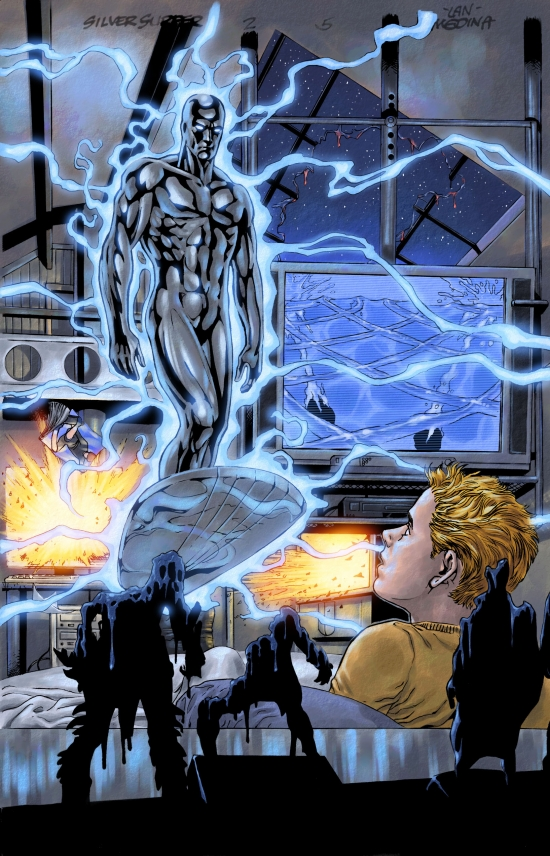

|
|
Introduction to
 He's the silver guy from planet Zenn-La. He's also known as "Sentinel of Spaceway" since he's the very first galactic superhero invented by Marvel. To give you a brief description of him. The Silver Surfer possesses vast cosmic power granted him by Galactus as a part of the process of physically restructuring the Surfer's former organic body. He has the ability to channel ambient cosmic energy into his body at will, and expel it violently as concussive force or gently as a means to restructure molecules according to his mental design.The forces binding together the molecules making up the silvery material that comprises the Silver Surfer's "skin" are so great that there are few known forces in the universe great enough to overcome them. The inner portions of his body have also been made highly resistant to injury. Thus the Surfer is invulnerable to most forms of physical harm. He can withstand great extremes of temperature caused by the build-up of friction within atmospheres or the vacuum of space or (within limits) the intense heat within the near vicinity of stars. He can survive without difficulties in the vacuum of outer space and hyperspace, and his body can withstand the stresses of travel at near-light speeds in this universe and of even greater speeds, in hyperspace.To get to know more of him simply click on the sublinks on the left side of this screen.
|